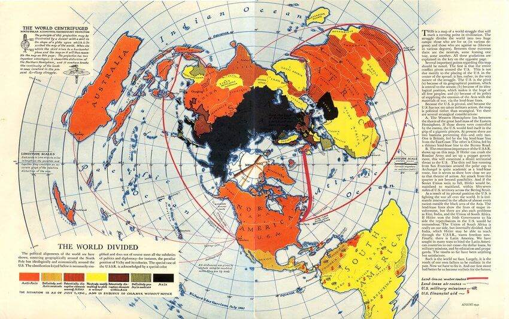
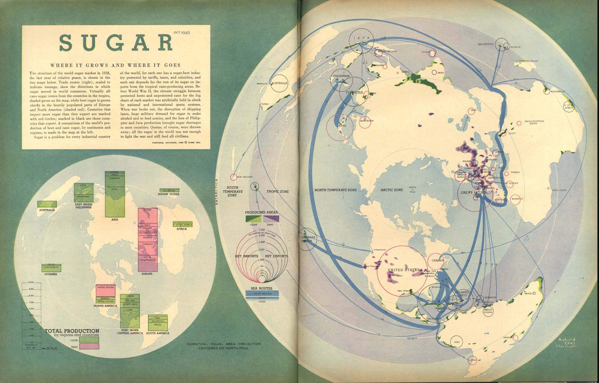
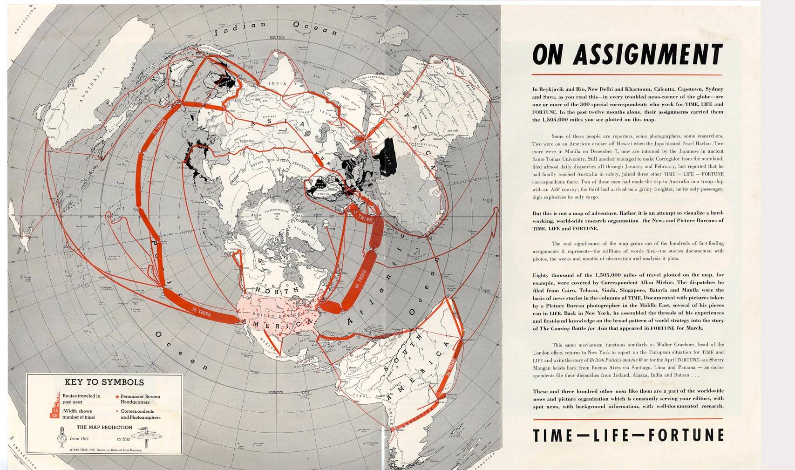
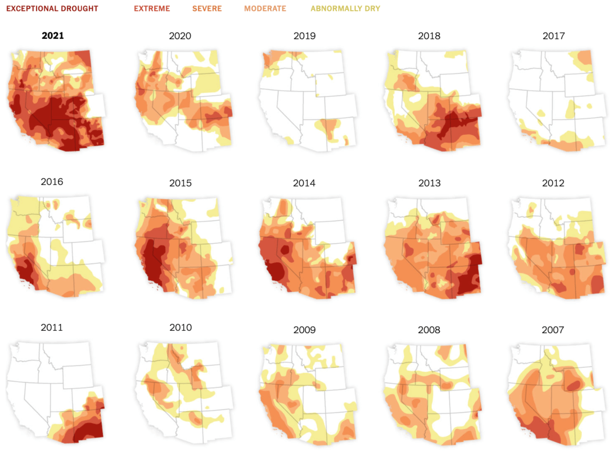
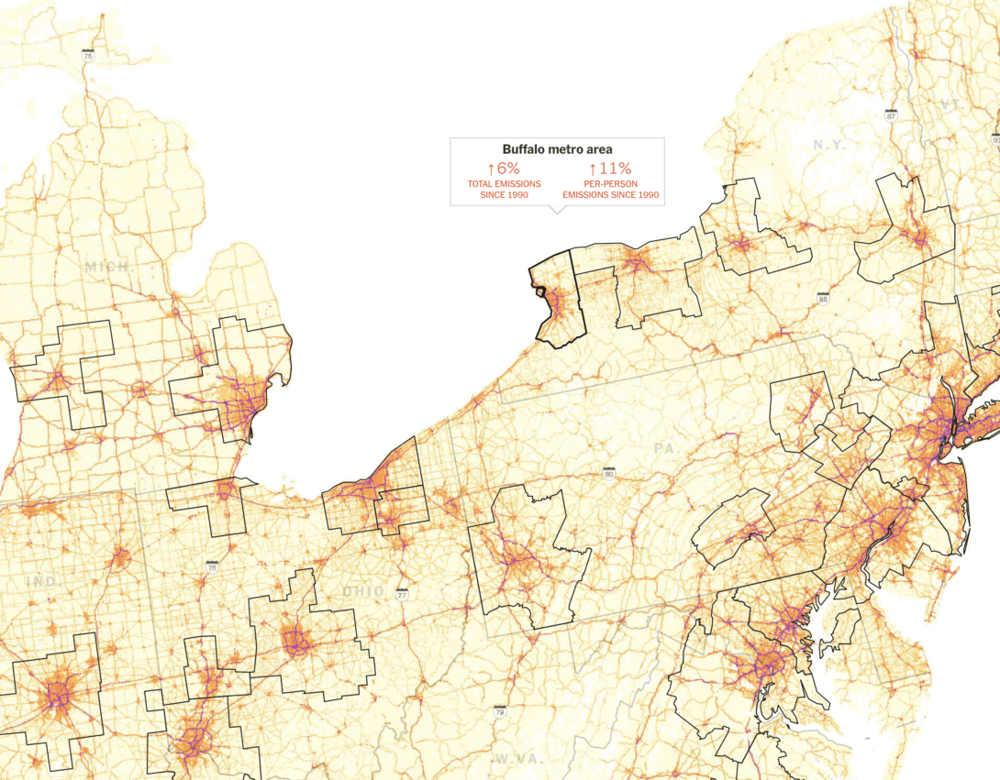
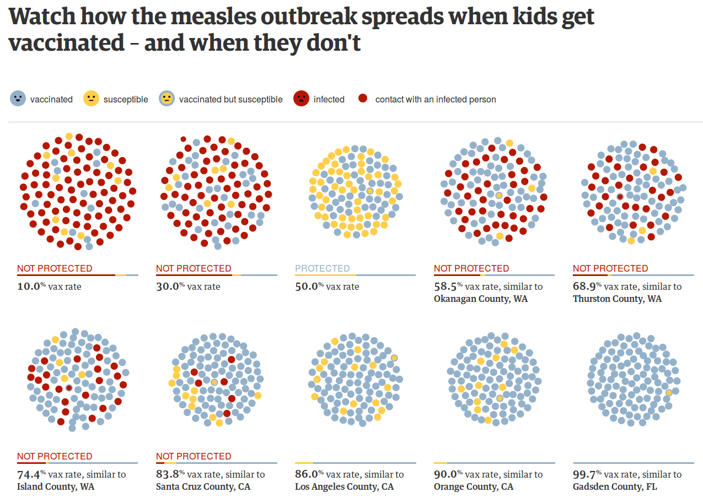
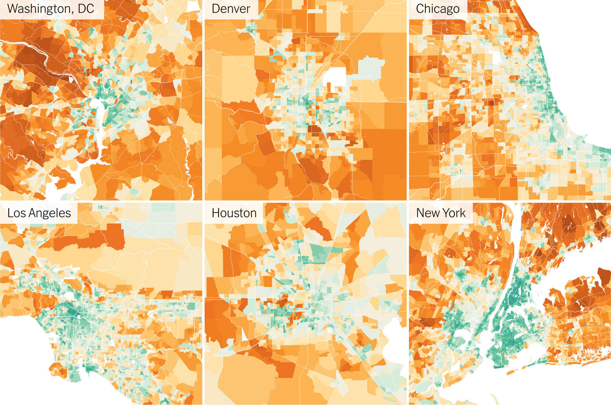

La visualización de datos ha ido evolucionando tras el paso de los años, es por esto que en ésta página se busca evidenciar esos cambios mediante la presentación de dos infografistas reconocidos.
Primero uno del S.XX conocido como "Transformer", término alemán que hace alusión a un especialista en "Ilustración"; entendiéndose también como un "pedagogo visual", el que utiliza el periodismo impreso como medio de divulgación.
Y en segundo lugar a una infografista del S.XXI que se presenta como una profesional en el tema, siendo éste reconocido y valorado; utilizando el periodismo digital como medio de divulgación.
RICHARD EDES HARRISON
Richard Harrison (1901-1994), fue un arquitecto, cartógrafo e ilustrador científico estadounidense que destacó por su estilo característico para desarrollar mapas, muchos de los cuales fueron publicados en Time y en la revista Fortune.

1. The World Centrifuged August, 1941.
https://www.fulltable.com/vts/f/fortune/menubc.htm

3. Sugar Where It Grows And Where It Goes, 1945.
https://www.fulltable.com/vts/f/fortune/menubc.htm

4. On Assignment (Time Life Fortune), 1942.
https://www.fulltable.com/vts/f/fortune/menubc.htm
NADJA POPOVICH
Nadja Popovich es una infografista contemporánea especializada visualización de datos y gráficos; ha trabajado en temas como ciencia, política energética, calentamiento global, y hoy dedicada a la sección del clima de The New Yor Times.
Sus trabajos en este medio suelen ser colaborativos, y por lo general son interactivos, aprovechando las oportunidades que entrega el periodismo digital.

1. Drought in the Western United States, 2021.
https://www.nytimes.com/interactive/2021/06/11/climate/california-western-drought-map.html

2. Auto emissions in America, 2019.
https://www.nytimes.com/interactive/2019/10/10/climate/driving-emissions-map.html
(Nadja Popovich and Denise Lu).

3. Watch how the measles outbreak spreads when kids get vaccinated – and when they don't, 2015.
http://www.theguardian.com/society/ng-interactive/2015/feb/05/-sp-watch-how-measles-outbreak-spreads-when-kids-get-vaccinated
(Kenton Powell, Nadja Popovich and Rich Harris).

4. The Climate Impact of Your Neighborhood, 2022.
https://www.nytimes.com/interactive/2022/12/13/climate/climate-footprint-map-neighborhood.html
(Nadja Popovich, Mira Rojanasakul and Brad Plumer).